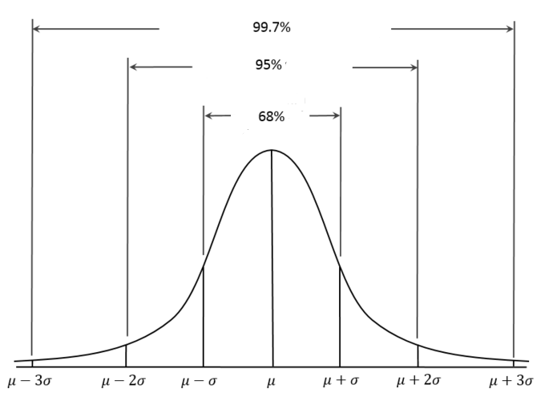
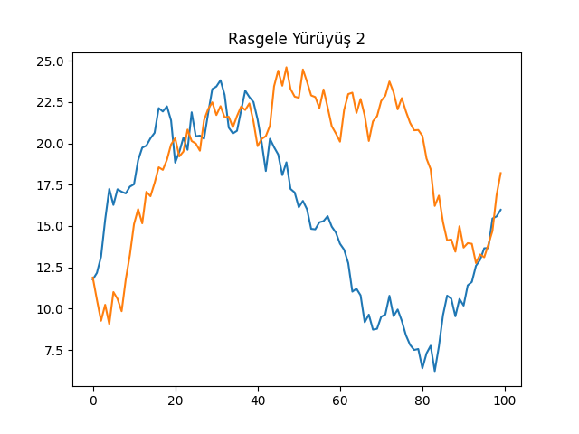
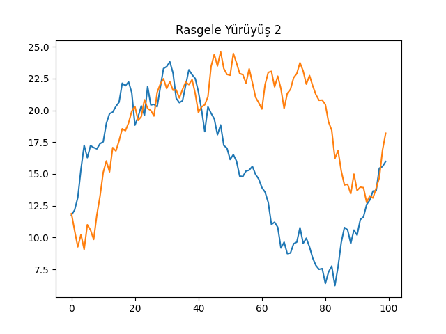

Bir zaman serisi \(t\) anında belli bir değeri olan veri noktalarıdır. Finans bağlamında çoğunlukla birbirini takip eden iki veri noktası arasında bağlantı olduğu ispatlanmıştır. Altta örnek bir zaman serisi görüyoruz; 500 senetin ağırlıklı ortalaması olan S&P 500 indisinin zaman göre gidişatı (düzeltilmiş kapanış hesaplarını baz alarak),
import pandas as pd
df = pd.read_csv('../tser_065_kelly/SPY2.csv',parse_dates=True,index_col='Date')
df = df.sort_index()
df = df[df.index > '1950-01-01']df['Adj Close'].plot()
plt.savefig('tser_intro_01.png')
Zaman serileri hakkında önemli bir bilgi onların “getirisidir (returns)’’. Getiri hesabı \(t\) ile \(t-1\) arasındaki değişim oranı, yani \(X_{t}-X_{t-1}/X_{t-1}\). Bu sayıyı 100 ile çarpınca ise yüzde değişimi elde ederiz. Pandas ile,
returns = df['Adj Close'].pct_change()
print (returns.head())Date
1993-01-29 NaN
1993-02-01 0.007022
1993-02-02 0.002034
1993-02-03 0.010728
1993-02-04 0.004303
Name: Adj Close, dtype: float64İlk veri noktası NaN oldu çünkü bir önceki veri noktası
yok.
Bu değişim oranı getiri zaman serilerinin doğasına göre bir yukarı bir aşağı iner, çünkü arz talebe, ya da diğer sebeplere göre senet fiyatları bazen çıkar, bazen düşer. Bir trend de olabilir tabii, bazen daha çok çıkabilir, bazen daha çok inebilir. Tamama bakılınca ve bu getirilerin, dikkat fiyat veri noktalarının değil, frekansını düşünürsek bu getirilerin bir dağılımdan geldiği kabul edilebilir, histograma bakalım,
returns.plot(kind='hist',bins=100)
plt.savefig('tser_intro_02.png')
İstatistikten hatırlarsak histogram bize belli değerlerin hangi frekansla görüldüğünü söylüyor. Bir histogram ile bir olasılık dağılımı arasında yakın bağlantılar var, histogram bir dağılımın sayısal hali denebilir. Şekil Gaussian dağılımına benziyor. Fakat genel bağlamda finans serilerinde tüm getirilerin Gaussian olduğunu direk söylemek hatalı olur, bu konuyu işleyeceğiz.
Histogramı okurken şöyle çıkarımlar yapabiliriz; mesela yüzdeliklere bakarız, ve diyelim ki yüzde 5 noktasında (histogram alanının yüzde 5’ine tekabül eden x-eksenindeki nokta) değeri okuruz, bu değer 0.02 civarında gibi duruyor; o zaman varılacak sonuç şöyle seslendirilebilir, “100 günün 5 gününde %2’lik düşüşler görülebilir’’. Bu mantıklı herhalde, çünkü bir dağılımdaki belli bir alan o alanın x-eksenindeki değerlerin ortaya çıkma olasılığını verir. Ortaya çıkma birimi gün ise, yüzde 5, 100 gün içinde 5 gün demektir.
Çıplak gözle bakmak yerine direk veriden bu hesabı yapabiliriz,
print (returns.quantile(q=0.05))-0.01775411051963858Gaussian durumu ilginç; kabaca Gaussian kabulü yapılabilir, fakat literatürdeki çoğu yazı finans serilerinde düşüşlerin daha sert olduğunu belirtir, yani Gaussian’da sola, negatif değerlere doğru bir yamukluk (skew) vardır. Ayrıca fazla sayıda zaman serilerine bakıldığında her iki yönde aşırı değerlerin Gaussian faraziyesine uymayan şekilde daha fazla olduğu tespit edilmiştir, yani finans getirilerinin dağlımı “etekleri kabarık’’ bir Gaussian’dır, daha doğrusu Öğrenci t dağılımıdır. Fakat basitleştirme amacıyla Gaussian kullanılabilir, tabii bu faraziyenin sınırlarını bilmek şartıyla.
Oynaklık (Volatility)
Artışların, düşüşlerin ne kadar sert, yüksek boyutta olduğunun iyi bir göstergesi olarak oynaklık kullanılır, oynaklık üstteki Gaussian faraziyesinden hareketle getirilerin standart sapması \(\sigma\)’dan (sigma) ibarettir, o zaman tanıdığımız, bildiğimiz \(\sigma\) hesabı direk burada kullanılabilir,
print (returns.std())0.010654265586994397Üstte en soldan yüzde 5 noktasına baktık, her iki yönde tek sigma büyüklüğünde bir getirinin Gaussian bağlamında alanın yüzde 68’ine tekabül ettiğini biliyoruz.

Bu demektir ki getiriler Gaussian ile dağılmışsa artı ya da eksi tek sigmalık (ya da ondan azı olan) değişimlerin olasılığı yüzde 68’dir. İki sigmalık (ve daha azı) büyüklüğünde getirilerin olasılığı yüzde 95’tır.
Günlükten yıllığa geçmek için getiriler için direk 256 ile çarpılır, bir yıl içinde aşağı yukarı 256 tane iş günü vardır. Standart sapma geçişi için \(\sqrt{256}\) yani 16 ile çarpmak gerekir. Bazıları 252 kullanıyor, çünkü NYSE borsasında 252 günde alışveriş yapılabilir. Karekök basitliği sebebiyle bizce 256 daha uygun.
Niye \(\sqrt{252}\) ile çarpıyoruz? Bu durum varlık fiyat zaman serisinin Brownian yürüyüş olmasıyla alakalı. BM serilerinde varyans \(t\) ile doğru orantılıdır, yani başlangıç noktasından ne kadar uzaklaşırsak varyans o kadar büyür, çünkü her adımdaki varyans toplanır (oynaklık standart sapmadır, ki bu varyansın kareköku o sebeple zamanın kareköku ile çarpıyoruz). Olasılıksal Calculus yazısında bu matematiği görüyoruz. Kabaca düşünmek gerekirse BM ‘sarhoş yürüyüşü’ ise ve bu yürüyüş her adımda rasgele bir hareket yapıyorsa, bu adımlar toplana toplana tabii ki başlangıç noktasından bizi çok uzak noktalara taşıyabilir (ve geri getirebilir).
Kabaca borsacılar bilir ki senetlerin yıllık standart sapması %20 civarıdır, daha güvenli olan tahvillerin ise %1.5. Kaldıraç, yani borç kullanıldığı zaman, mesela 10 kat kaldıraç olduğunu düşünelim, bu oynaklığı 10 ile çarpmak demektir. Normal bir hisse için 10 kat kaldıraç sizi yıllık sigma %200’e seviyesine getirir, bu günde %200 / 16 = %12.5 demektir. Eğer getirimiz son derece iyimser bir bakışla yılda %200 olsaydı, bu günlük %0.8 olurdu (256 ile böldük) ve ters yönde bir sigma’lık düşüş geldiği anda 0.8-12.5=-%11.7’ı görürdük, diğer yönde 0.8+12.5=%13.3. Fakat bu demektir ki günlük getiriler 100 günün 68’inde -%11.7 ile %13.3 arasında gidip geliyor, 95’inde %-24.2 ile %25.8 arasında gidip geliyor. O zaman günlerin 100-95=%5’inde bu bantın her iki taraftan dışında (en azdan daha az, en fazladan fazla) rakamlar göreceğiz demektir, 5/2=%2.5 kadar zamanda %-24.2’dan daha fazla düşüş olacak demektir bu! 100 günde 2.5 demek, 40/1 oran anlamına geliyor, bir ay içinde 20 işgünü olduğuna göre bahsedilen olayın aşağı yukarı iki ayda bir ortaya çıkması muhtemeldir. Yani iki ayda bir günde -%24.2’lik getiri kaybı! Bu frekans olarak çok ciddi bir kayıptır, ve psikolojik olarak yatırımcıyı rahatsız edecektir. Bu noktaya nasıl geldiğimizi hatırlayalım, son derece iyimser bir getiri, 10 kat seviyesinde bir kaldıraçla başlamıştık.
Sharpe Oranı (Sharpe Ratio)
Sharpe oranı (SO) bir işlem stratejisinin, ya da bir varlığı elde tutmanın, ki basit olsa bile bu da bir strateji, ne kadar karlı olacağını ölçek bir hesaptır. Hesaplamak için getirileri riske göre uyarlarız. Formel olarak getirinin ortalamasını aynı periyottaki standart sapmaya böleriz. Bu bize günlük SO verir, yıllığı hesaplamak için \(\sqrt{256}\) ile çarpmak gerekir.
Rasgele Yürüyüş (Random Walk)
Senet fiyatlarının rasgele yürüyüşe göre hareket ettiği söylenir. Modelin bir şekli
\[ y_t = y_{t-1} + z \]
ki \(z \sim N(0,\sigma)\). Formülü alttaki şekliyle görürsek daha açık olabilir, \(Z_1,Z_2,..,\) bağımsız özdeşçe dağılmış (independently, identically distributed -iid-), ortalaması \(\mu\), standart sapması \(\sigma\) olan dağılımlar olsun, ve herhangi bir başlangıç noktası \(X_o\)’dan \(t\) anında gelinen nokta
\[ X_t = X_0 + Z_1 + Z_2 + ... + Z_t , t \ge 1\]
olarak belirtilebilir. Her \(t\) anında bir rasgele değişkene göre bir yere savruluyoruz. Modele dikkat, önceki veri noktası ile bir korelasyonumuz yok, her noktada zar atılıyor, başka hiçbir şey yapılmıyor.
\(X_t\) bu durumda bir rasgele yürüyüştür, ve adımları \(Z_1,Z_2,..\)’dir. Eğer adımlar normal olarak dağılmış ise, sürece normal rasgele yürüyüş adı verilir. \(X_0\) verildiği / bilindiği durumda \(X_t\)’nin beklentisi ve varyansı,
\[ E(X_t|X_0) = X_o + \mu t \]
\[ Var(X_t|X_0) = \sigma^2 t \]
Varyans için bağımsızlık durumunda \(Var(X+Y) = Var(X)+Var(Y)\) olduğunu hatırlayalım, varyans toplamları \(\sigma t\) olur, sabit \(\sigma\) varyans dışına karesi alınmış olarak çıkar. Sabit \(X_0\) zaten yokolur, onun varyansı yoktur.
Bu modelin bir diğer ismi Brown Hareketi (Brownian Motion), \(\mu\) parametresi kaymadır (drift), tüm zaman serisine bir genel yön verir. Kaymanın tanımlandığı duruma Kaymalı Brown Hareketi (Brownian Motion with Drift) ismi verilir.
Simüle edelim, iki tane \(\mu=0\), iki tane \(\mu=0.5\) ile.
import statsmodels.api as sm
import pandas as pdnp.random.seed(0)
def random_walk(i,mu=0):
Z_s = np.random.normal(loc=mu,scale=1.0,size=100)
X_0 = 10
X_t = X_0 + Z_s.cumsum()
plt.plot(X_t)
plt.title('Rasgele Yürüyüş %d' % i)
plt.savefig('tser_stoc_0%d.png' % i)
random_walk(1)
random_walk(2)
random_walk(3,mu=0.5)
random_walk(4,mu=0.5) 
 

Görüldüğü gibi rasgele yürüyüş üretimini sağlayan çağrıya \(\mu\) haricinde (bir de dokümantasyon amaçlı bir indis) haricinde başka hiçbir parametre vermedik, yani aynı kod arka arkaya dört kez işledi, ama herbirinde aynı başlangıç değeri olmasına rağmen tamamen farklı görüntüler çıktı. Görüntüler borsadaki senet fiyatlarını da andırıyor!
Her adımda Gaussian gürültü eklendiği için veri analizi yaparken Guassian’lığı fiyatların getirisi / farkında görmek mümkündür. Günlük bazda diyelim artış / azalışın histogramını alırsak, ünlü can eğrisini elde ederiz. Tabii şunu da eklemek lazım, değişimin dağılımı “tam olarak’’ Gaussian kabul edilmiyor, bu dağılımın”etekleri daha kabarıktır’’, yani ekstrem değerler Gaussian’a göre daha muhtemeldir. Bu dağılımın Öğrenci t (Student t) dağılımı olduğu söylenir. Fakat kolaylık açısından, kriz şartlarına dikkat etmek koşuluyla, Gaussian kullanılabilir.
Bağımlılık
Genel İstatistik öğrenirken çoğunlukla veri noktalarının birbirinden bağımsız olduğunu farzettik, mesela regresyon durumunda eğer \(X_i\) biliniyorsa her \(Y_i\) birbirinden bağımsızdı, ayrıca \(X_i\)’ler birbirinden bağımsızdı. Çok değişkenli durumda veri noktalarının öğelerinin birbiriyle çetrefil şekilde alakalı olma durumunda bile veri noktalarının birbirinden bağımsız olduğunu farzettik. Şimdi bu faraziyeyi gevşeteceğiz, yani ayrı veri noktaları arasında bağımlılık durumuna bakacağız.
Bağımlı verilere en iyi örnek zaman serileridir, ve bu veri tipi aynen isminin çağrıştırdığı gibi bir değerin bir zaman süreci içinde kaydedilmiş değerleri olacaktır. İstatistik uygulamalarında bu durum çoğunlukla bir \(X\) değişkeninin \(t\) anından başlanarak eşit zaman aralıklarında, mesela \(h\) aralıklarıyla değerinin kaydedilmesiyle ortaya çıkabilir, \(X_t,X_{t+h},X_{t+2h},...\) gibi..
Altta iki tipik zaman serisi görüyoruz. Bunlardan ilki yapay olarak üretilmiş, ikincisi Kanada’nın bir bölgesinde her sene yakalanan lynx (orta boylu bir kedi türü) sayısı baz alınarak yaratılmış. Bu verilerin dalgalanış şekilleri, kabaca gidişatları, vs. aslında birbirlerine çok benziyor.
def logistic_map(x,r=4): return r*x*(1-x)
def logistic_iteration(n,x_init,r=4):
x = [0 for i in range(n)]
x[0] = x_init
for i in range(n-1): x[i+1] = logistic_map(x[i])
return x
n = 1000
x = logistic_iteration(n, x_init=0.01)
y = x + np.random.normal(size=n,loc=0.,scale=0.05)
plt.title('Yapay Veri')
df_artificial = pd.DataFrame()
df_artificial['y'] = y
df_artificial.y[:100].plot()
plt.savefig('tser_stoc_05.png')
import pandas as pd
df = pd.read_csv('../tser_015_stoc/lynx.csv',index_col=0)
df.plot()
plt.title('Lynx')
plt.savefig('tser_stoc_06.png')Soru: Yapay veriyi üretirken niye lojistik harita (logistic map) kullandık? Cevap: Hoca [1] herhalde hem birbirine bağımlı noktalar yaratmak, hem de onların biraz “kaotik’’ olmasını istedi, ki lojistik harita kaos matematiğinde iyi bilinen bir fonksiyondur.
Zaman serisi analizinde yapmaya çalıştığımız İstatistiğin geri kalanından bize tanıdık: önümüzde gördüğümüz zaman serisini, o seriyi üreten, görmediğimiz, yarı-rasgele (“stochastic’’) bir süreçten alınmış bir yansıma / oluş (realization) olarak görmek, önümüzdeki veriyi bu süreç hakkında tahminler (çıkarsama / inference) yapmak için kullanmak, ve bu tahminlerin, rasgeleliğini açıkça belirledikten sonra güvenilir olması için uğraşmak. İşimizi zorlaştıran her gözlemin / veri noktasının birbiri ile bağlantılı olması; diğer yandan çoğu zaman üzerinde çıkarsama yapmak istediğimiz şey de aslında bu bağlantının ta kendisi.
Notasyon
Eşit aralıklı örneklenmiş zaman serisini göstermek için indeks olarak zamanın kendisini kullanmak yerine (mesela 1920 senesinde, 1921 senesinde, vs demek yerine) her öğenin seri içindeki yerini kullanmak daha rahattır, \(X_1,X_2,..\) gibi. Buradan hareketle bir kısayol notasyonu şudur: bir zaman blokunu göstermek için \(X_i^j = (X_i,X_{i+1},...,X_{j-1},X_j)\).
Durağanlık (Stationarity)
Tablosal dünyamızda durum nasıldı? Her biri birbirinden bağımsız ama aynı dağılımlı (IID) veri noktalarımız var, bu bize analizde bazı faydalar sağlıyor. Zaman serileri için de benzer bir aynılık özelliğinin olması iyi olmaz mıydı? Böyle bir özellik var, ve ismi durağanlık. Kelimenin anlamı zaman serisinin hiç değişmediği anlamına gelmiyor tabii, onun dağılımının değişmediği anlamına geliyor.
Daha kesin bir şekilde belirtmek gerekirse, eğer tüm \(k,t\) için \(X_1^k\) ve \(X_t^{t+k-1}\) aynı dağılıma sahipse bu zaman serisi \(X\)’in güçlü durağan (strongly stationary), ya da kesin durağan (strictly stationary) olduğu söylenir, yani \(k\) büyüklüğündeki blokların dağılımı zamana bağlı değildir (time-ınvariant). Tekrarlamak gerekirse bu tüm blokların aynı değerlere sahip olduğu anlamına gelmez, sadece aynı dağılıma sahip olduğu anlamına gelir.
Çoğunlukla finans zaman serileri durağan olmaz, ama serinin değişimi, yani \(t\) ile \(t-1\) arasındaki fark durağan olabilir, arada bir log transform da da gerekebilir. İstatistiki modelleme açısından bu işlemlerin pek negatif bir etkisi yoktur, her halükarda ise yarar bir model elde ederiz.
Durağan süreçlerin güzel tarafı şudur, onları çok az parametre ile modelleyebilirsiniz. Mesela her \(X_t\) için farklı bir beklentiye (expectation) ihtiyaç yoktur, hepsinin beklentisi aynıdır, \(\mu\). Bu demektir ki \(\mu\)’yu \(\bar{X}\) ile doğru doğru bir şekilde kestirmek (estimate) mümkündür.
Eh bir “güçlü’’ durağanlık varsa, herhalde bir”zayıf’’ durağanlık ta olmalı.. Hakikaten de bu var. Zayıf durağanlık için tek gereken şartlar \(E(X_1) = E(X_t)\) ve \(Cov(X_1,X_k) = Cov(X_t,X_{t+k-1})\) olması. Dikkat, bu şart için bloklar üzerinden değil tek veri noktaları üzerinden bir beyan yapıyoruz. Doğal olarak güçlü durağanlık aynı zamanda zayıf durağanlık ta olduğunu söyler (bunu egzersiz olarak doğrulayabilirsiniz) , fakat çoğunlukla bu eşitlik ters yönde geçerli değildir.
Kendisiyle Korelasyon (Autocorrelation)
Zaman serileri çoğunlukla zincirleme olarak bağlantılıdır, yani \(X_t\) noktası kendinden önceki ve sonraki tüm değerler ile bağlantılıdır. Fakat bu bağlantı her mesafede aynı etkide değildir, çoğunlukla bir bağlantı kaybı (decay of dependence) durumu sözkonusudur (bazen korelasyon kaybı -decay of correlations- ismi de veriliyor), yani \(h \to \infty\) iken \(X_t,X_{t+h}\) değişkenleri birbirinden gittikçe daha çok neredeyse tam bağımsız hale gelir (kelimelendirme kritik, hoca tam bağımsız olur demiyor, çok az bağımlılık hala kalabilir, ama aralık büyüdükçe, hatta sonsuzluğa yaklaştıkça bağımsızlık artar, neredeyse tam bağımsızlık haline gelir).
Bu durumu ölçmenin bilinen en eski yöntemi kendisiyle koveryans (dikkat korelasyon değil) ölçütüdür,
\[ \gamma(h) = Cov(X_t,X_{t+h}) \]
Aynı şekilde kendisiyle korelasyon (autocorrelation) da kullanabilirdik,
\[ \rho(h) = \frac{Cov(X_t,X_{t+h}) }{Var(X_t) } = \frac{\gamma(h)}{\gamma(0)} \]
Korelasyon tanımından üstteki ilk eşitliğe nasıl geldik? Korelasyon bilindiği gibi
\[ \frac{Cov(X_t,X_{t+h}) }{\sqrt{Var(X_t)}\sqrt{Var(X_{t+h})} } \]
Daha önceki zayıf durağanlık tanımından,
\[ Cov(X_1,X_k) = Cov(X_t,X_{t+k-1}) \]
Eğer \(k=1\) olsaydı,
\[ Cov(X_1,X_1) = Cov(X_t,X_t) = Var(X_1) = Var(X_t)\]
Bu ifadenin her \(t\) için doğru olması gerektiği için \(Var(X_t) = Var(X_{t+h})\) diyebiliriz. O zaman korelasyon şu hale gelir,
\[ \frac{Cov(X_t,X_{t+h}) }{\sqrt{Var(X_t)}\sqrt{Var(X_t)} } = \frac{Cov(X_t,X_{t+h}) }{Var(X_t)} \]
Sağ taraftaki eşitliğe gelelim: sadece \(\gamma\) formu kullanmaya uğraşalım, \(h=0\) dersek \(\gamma(0) = Cov(X_t,X_{t+0}) = Cov(X_t,X_t)\) elde ediliyor ve bilindiği gibi \(Var(X_t)=Cov(X_t,X_t)\). O zaman
\[ \frac{Cov(X_t,X_{t+h}) }{Var(X_t)} = \frac{\gamma(h)}{\gamma(0)} \]
Daha önce belirttiğimiz gibi çoğu zaman serisi için \(h \to \infty\) \(\gamma(h) \to 0\).
Python Pandas ile korelasyon grafiği şöyle basılır,
fig = plt.figure(figsize=(12,8))
ax1 = fig.add_subplot(211)
fig = sm.graphics.tsa.plot_acf(df.values.squeeze(), lags=40, ax=ax1)
ax2 = fig.add_subplot(212)
fig = sm.graphics.tsa.plot_pacf(df, lags=40, ax=ax2)
plt.savefig('tser_stoc_07.png')fig = plt.figure(figsize=(12,8))
ax1 = fig.add_subplot(211)
fig = sm.graphics.tsa.plot_acf(df_artificial.values.squeeze(), lags=40, ax=ax1)
ax2 = fig.add_subplot(212)
fig = sm.graphics.tsa.plot_pacf(df_artificial, lags=40, ax=ax2)
plt.savefig('tser_stoc_08.png')
Üstteki her iki verinin de kendisiyle korelasyonunu görüyoruz. İlginç bir durum ortaya çıktı, yapay zaman serisinin kendisiyle korelasyonu neredeyse hep sıfır etrafında, yani hangi aralığı baz alırsak alalım, iki veri noktası arasındaki bağlantı çok az. Bu durum serinin ilk grafiğini düşününce garip geliyor. Hakikaten bir acaiplik var, bu şeride bir takım bağlantılar olduğunu \(X_{t+1},X_t\) grafiğini basarak bile görebiliriz,
df_artificial['lagged_y'] = df_artificial.y.shift(-1)
df_artificial.plot(kind='scatter',x='y',y='lagged_y')
plt.title('Yapay')
plt.savefig('tser_stoc_09.png')df['lagged_x'] = df.x.shift(-1)
df.plot(kind='scatter',x='x',y='lagged_x')
plt.title('Lynx')
plt.savefig('tser_stoc_10.png')Yani kendisiyle korelasyon her zaman gerekli bilgiyi vermeyebilir, ama bilinmesi iyi olur. Daha genel ölçütler mesela Spearman \(X_{t+h},X_t\) kerte korelasyonu (Spearman rank-correlation) ya da ortak bilgi (mutual information) gibi ölçütler.
Ama aslında kendisiyle korelasyonun önemli olmasının 4 sebebi var. İlki, bu ölçüt istatistikteki en eski ölçütlerden biri, yani “kullanıcı bazı’’ geniş, herkes kendisiyle korelasyon hakkında birşeyler biliyor, iletişimde bu kavramı kullanıyorlar, ve gelip size bu ölçüt hakkında birşeyler soracaklar. İkincisi, son derece nadir bir durum olan Gaussian süreçleri durumunda kendisiyle korelasyon size hakikaten bilmeniz gereken herşeyi söyler. Üç, birazcık daha az nadir olan lineer tahmin durumunda yine bilmemiz gereken herşeyi bize söyler.
Kaynaklar
[1] Carver, Systematic Trading
[2] Macrooption, Why Is Volatility Proportional to the Square Root of Time, https://www.macroption.com/why-is-volatility-proportional-to-square-root-of-time/